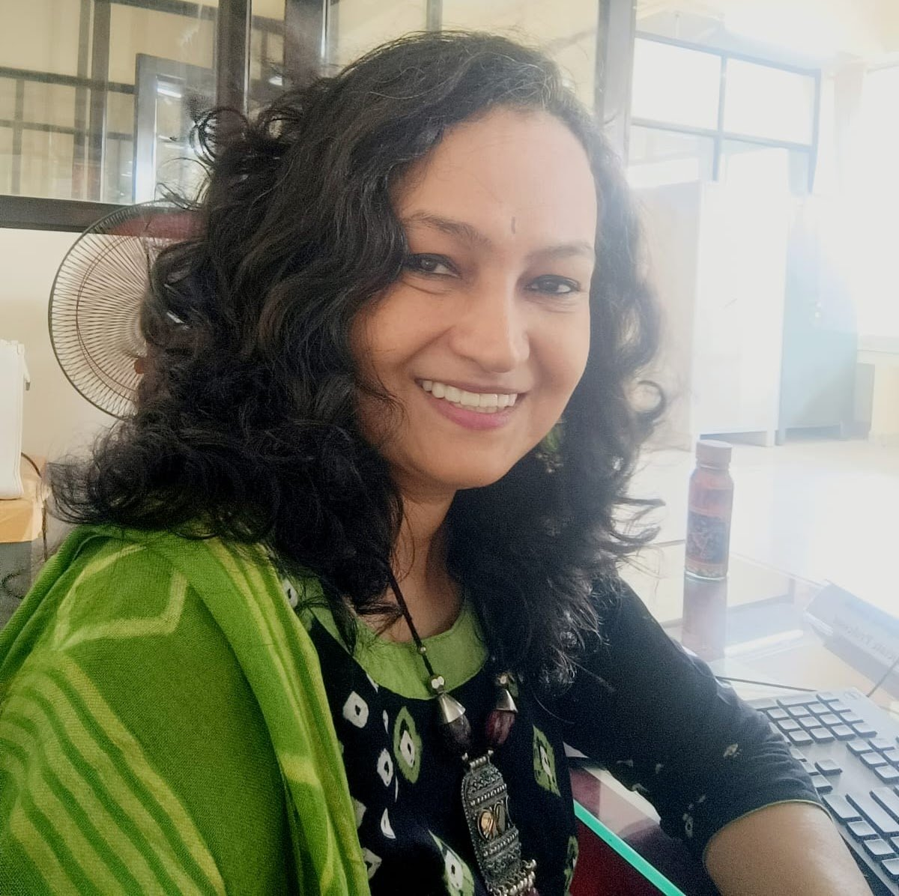

Ph.D. in Computer Science
SNDT Women’s University, Mumbai, India, under the Vishveshvereyya PhD Fellowship
Thesis: Novel Approach of Sensor Data Classification for Road Quality Assessment.

PhD, Associate Professor, Department of Information Technology
University of Mumbai, Vidyanagari, Kalina Campus, Kurla West, Mumbai, India
I am an Associate Professor in the Department of Information Technology at the University of Mumbai. I completed my PhD in Computer Science at SNDT Women’s University in 2024. My thesis proposed a new approach to classifying sensor data for road quality assessment.
My work spans AI and data science, embedded systems and IoT, machine learning and real-time systems, and geo-ICT for rural development. I contribute to curriculum development, and I advise and mentor students. Earlier, I headed the Department of Information Technology at Narsee Monjee College of Commerce and Economics, where I also coordinated the B.Sc. IT programme.
I am Associate Editor of the Journal Control Science and Engineering. I serve on several university Boards of Studies, and I regularly lead sessions on generative AI and research methods for faculty and research scholars.
SNDT Women’s University, Mumbai, India, under the Vishveshvereyya PhD Fellowship
Thesis: Novel Approach of Sensor Data Classification for Road Quality Assessment.
Sikkim Manipal University, Manipal, India
SET 2011 and 2012, NET 2013
Yashwantrao Chavan Open University, Nasik, India
Dissertation: Designing a generalized questionnaire for information envelop.
Institute of Management and Research, North Maharashtra University, Jalgaon, India
North Maharashtra University, Jalgaon, India
Completed. Funded by NM College.
Ongoing.
7-day national level Faculty Development Programme and Ph.D. coursework on Research Methodology. Research and Development Cell, KES B.K. Shroff College of Arts and M.H. Shroff College of Commerce (Autonomous), with ICSSR Western Regional Centre.
Faculty development programme at MVM College, Andheri.
Session for faculty at St. John College of Humanities and Science, Palghar.
Session at the faculty development programme “Research Horizons: Exploring and Mastering Large Language Models”.
Sessions for MSc Cloud Computing students of Liverpool John Moores University, with upGrad.
For TYCS, IT and Data Science students at N. G. Acharya and D. K. Marathe College of Arts, Science and Commerce, Chembur.
Sessions on reference management software, Microsoft Teams and advanced Excel at NM College.
Sessions at various colleges under the University of Mumbai.
For faculty under the University of Mumbai.
Technically co-sponsored by IEEE MP Section. Host: Kalinga University, Naya Raipur, India.
Thakur College, Kandivali, Mumbai, India.
See all publications, books and datasets
Also: two datasets submitted for copyright (Mango Plant Diseases and an EEG raw dataset), and three patents in the pipeline.